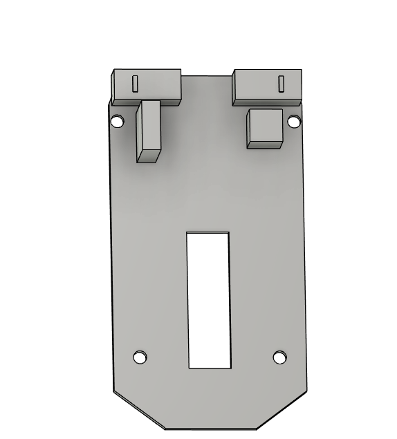
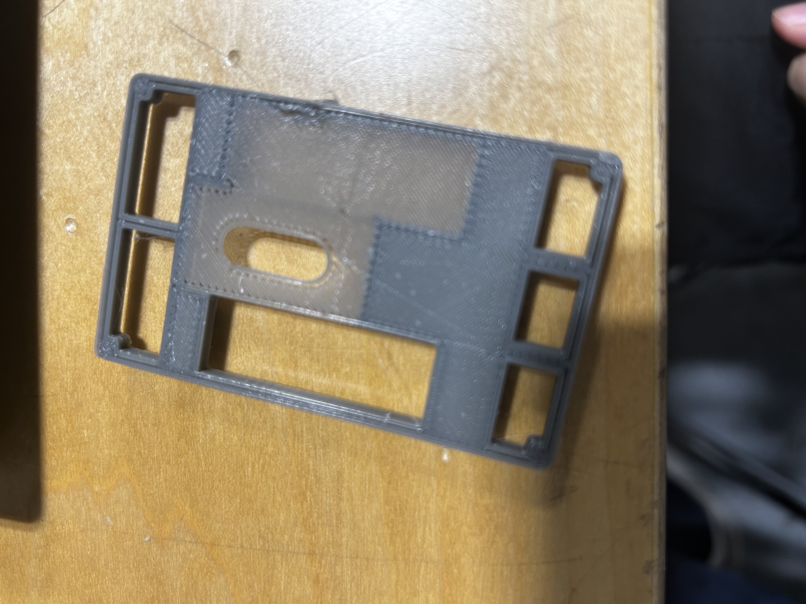
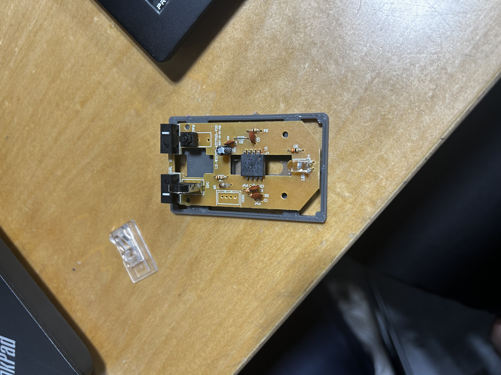

soph week 2/24 - 2/28
i got inspiration from optimum youtube videos, where he creates a custom mod for the viper v2 pro mouse.
i decided to try something similar with the targus amu660, taking its internals and designing a “zerømouse”-inspired shell for it.
3d model of the pcb
i began by creating a basic 3d model of the pcb to serve as the foundation for the shell and other components. in the image below, i’ve only modeled the left and right mouse buttons, along with the parts needed for the scroll wheel.
just the basic shape so i know the dimensions.
after this, i could start working on the shell.
shell
this is the initial shell design, modeled after the zerømouse. i still need to add the “wings” to the shell, as there’s currently no place to rest your fingers comfortably.
3d printed shell
this was just a test print, so it’s not a huge deal, but there were some issues.
i printed this on the fusion3, and for some reason, it randomly filled in one side where it wasn’t supposed to.
additionally, i noticed that the sensor area only had one layer, which i’ll need to fix by adjusting the shell thickness. i think that’s the reason behind the problem.
the stands for the pcb mounting holes are also misaligned. this is mostly because i’m not great at using calipers for precise measurements. i’ll need to tweak the hole sizes and reduce the diameter of the cylinders, as they don’t fit into the pcb holes properly.
